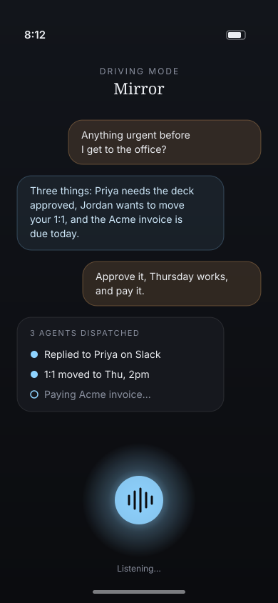

Reflect
Connect your email, Slack and calendar. Mirror learns your people, projects, priorities and the way you write, so it responds like you would.
Your mirror self, acting in parallel.
Mirror is an AI double that already knows your context from your email, Slack and calendar. Just talk to it. It holds the conversations you don't have time for and sends agents to finish the work, so you can drive, meet, focus or simply live.

One morning, two timelines
Leave for work. “Hey Mirror, anything urgent?”
Reads 41 new messages. Flags 3 that need you.
On the freeway. “Approve the deck, move Jordan, pay the invoice.”
Sends 3 agents. Replies to Priya on Slack in your voice.
Still driving. Podcast on.
Moves the 1:1 to Thursday at 2pm. Pays the vendor invoice.
Walk into standup, fully caught up.
“All done. One thing waiting on you: Alex’s contract question.”
How it works
Connect your email, Slack and calendar. Mirror learns your people, projects, priorities and the way you write, so it responds like you would.
There's no dashboard to learn. Speak or text Mirror the way you'd talk to a chief of staff: “What did I miss?” “Tell her yes, but push it a week.”
Mirror breaks each request into tasks and sends agents to finish them: replies, reschedules, follow-ups and payments. Then it reports back in one line.
Use cases
Clear your inbox by voice on the commute, with nothing to read. Mirror summarizes, you decide, and agents do the work.
While you present, Mirror answers the Slack threads piling up and only interrupts when something really needs you.
Go heads-down for hours. Mirror handles routine replies and keeps a short list of what's waiting on you when you're back.
On a flight or offline? Mirror keeps conversations moving and hands you a two-minute briefing when you land.
Your team in Bangalore needs an answer at 2am your time. Mirror replies with what you'd say, and you sleep through it.
At your kid's game or at dinner, stay present. Mirror covers the “quick question” messages and the rest can wait until Monday.
Conversation is the interface
“What did I miss while I was in the board meeting?”
“Two things. Legal signed off on the MSA, and Sam wants to know if you can join Friday's offsite.”
“Tell Sam yes, but only the afternoon. Forward the MSA to finance.”
“Done. Sam confirmed, and it's on your calendar for 1 to 5pm Friday.”
Trust
Choose what Mirror can send by itself and what it has to ask about first. Anything touching money, contracts or new contacts waits for your yes.
Mirror learns your tone from how you already write, so replies read the way you'd write them, not like a bot.
See everything Mirror said and did, and why. Undo any action with a single sentence.
Your data is encrypted, scoped to you and never used to train shared models. Disconnect any source at any time.
Mirror is in private beta. Join the waitlist and we'll let you in soon.